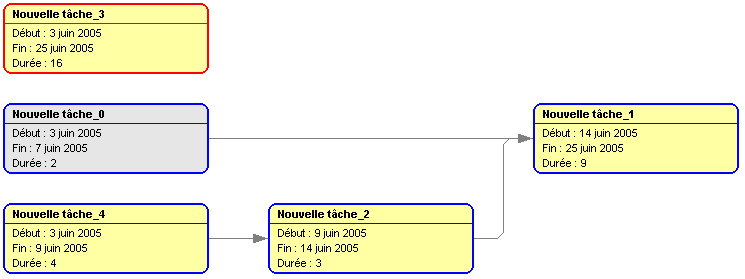
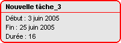
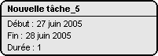
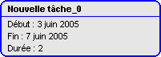
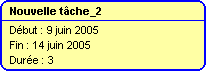

Réseau PERT
Si le plugin PERT est installé, GanttProject vous permet de visualiser le projet courant en
réseau PERT (Program Evaluation and Research Task ou Program Evaluation and Review Technique).
Comment savoir si PERT est disponible sur ma version de GanttProject ?
- si le menu Affichage ne contient pas l'élément Diagramme de PERT, PERT n'est pas disponible ;
- sinon PERT est disponible.
Visualiser le réseau PERT
- aller dans le menu Affichage ;
- cliquer sur Diagramme de PERT ;
- un nouvel onglet apparaît avec le réseau PERT correspondant au projet courant.

Explications
Le réseau PERT de GanttProject reprend le formalisme des tâches sur les noeuds et non celui des états
sur les noeuds et des tâches sur les arcs.
Chaque noeud du réseau PERT correspond donc à une tâche définie dans GanttProject.
Pour différencier les tâches mères, les points bilan et les tâches normales, les rectangles ont des contours
de couleurs différentes :
-  : est une tâche mère (bordure rouge) ;
-  : est un point bilan (bordure noire) ;
-  : est une tâche normale (bordure bleue) ;
-  : est une tâche critique (fond jaune).